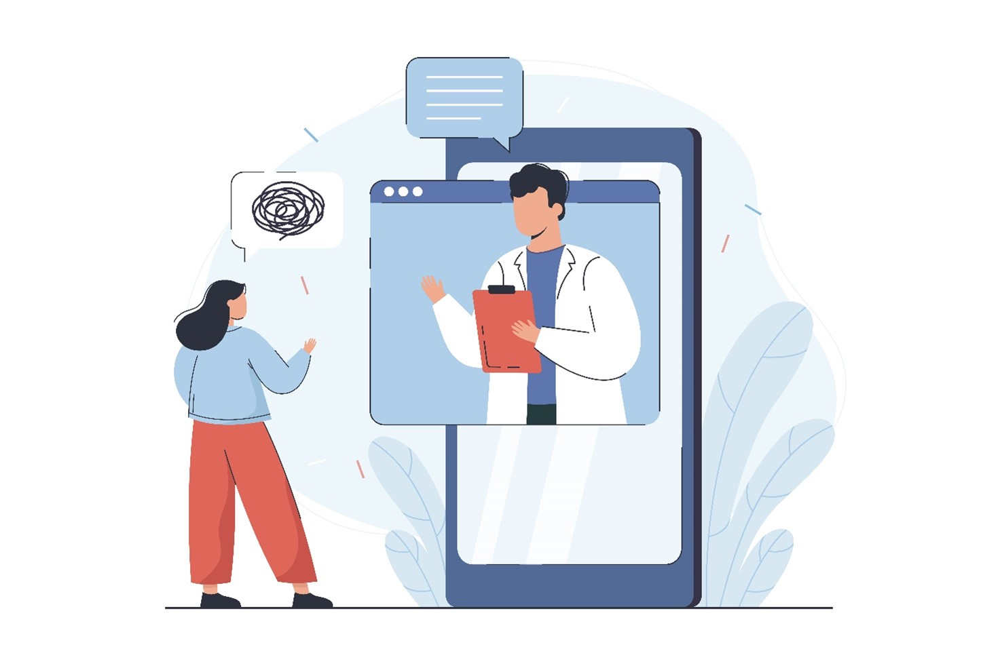

Психологічна допомога під час війни

Гарячі лінії безкоштовної психологічної допомоги:
- Міжнародна гуманітарна організація “Людина в біді” надає безкоштовні цілодобові психологічні консультації (0 800 210 160) та скеровує до основних інформаційних служб людей, які живуть уздовж лінії розмежування. Крім того, зателефонувавши за номером 0 800 210 174, можна дізнатися інформацію про наявну гуманітарну допомогу.
- Фундація “ВАРТО ЖИТИ” запустила ініціативу, у рамках якої 50 психологів зі всієї України в будні дні надають безкоштовну психологічну допомогу за номером: 5522 (Водафон та ін.) або +38 (093) 170 72 19 (для абонентів Київстар відповідно до тарифу оператора).
- Цілодобова гаряча лінія психологічної допомоги — 0 800 501 212.
- Безкоштовна та анонімна допомога фахових психологів — 0 800 211 444.
Онлайн-платформи для надання психологічної допомоги:
- Mindly допомагають українцям, які постраждали у війні: внутрішні переживання, психологічна травма, втрата близького, депресія.
- Ініціатива “УкрЄдність” об’єднала понад 40 фахівців волонтерів з різних країн задля підтримки українців, які потребують допомоги через війну. Їхня команда працює щодня від 8:00 до 21:00.